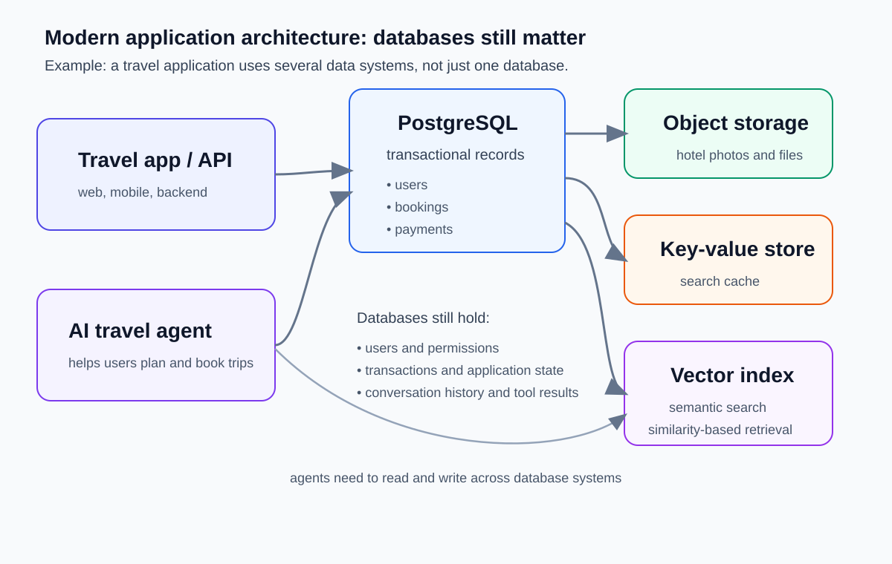

1.1 Why Databases Still Matter#
Why databases still matter#
Modern applications run on data.
When you register for classes, book a hotel, pay for a flight, check a bank balance, or stream a movie, a database is usually involved.
Databases matter because organizations need information that is:
organized
reliable
searchable
shared across many users and systems
protected from loss or unauthorized access
For a very small task, a file may be enough.
For a real application, that is usually not enough.
Once data must support many users, repeated updates, reports, permissions, or business rules, a database becomes much more useful.
What is a database?#
A database is a collection of related data organized for a purpose.
A useful database has a few key features:
it represents part of the real world
its data has meaning and structure
it is built for a set of users, questions, or applications
In this course, we are not only storing data. We are learning how to organize it well.
What does a DBMS do?#
A database management system (DBMS) is software that helps users and applications create, store, manage, and use a database.
A DBMS helps with tasks such as:
defining data types, tables, and rules
storing data in an organized way
querying data to answer questions
updating data as the real world changes
sharing data across users and applications
protecting data through security and recovery
maintaining the system over time
Metadata is also important.
Metadata is data about the data, such as table names, column types, and constraints.
Core concepts for this course#
Week 1 introduces two kinds of vocabulary.
Modeling vocabulary 🧠#
These words describe the real-world problem.
Entity: a person, place, event, or thing we care about
Attribute: a property of an entity
Relationship: how entities are connected
Implementation vocabulary 🛠️#
These words describe how the data is represented in a relational database.
Table: an organized structure for storing data
Row: one record in a table
Column: one attribute stored for many records
Schema: the overall structure of the database
Quick mapping#
Modeling idea |
Relational representation |
|---|---|
Entity |
Table |
Attribute |
Column |
One instance of an entity |
Row |
Relationship |
Keys and linked tables |
This distinction will help later when we move from conceptual design to SQL tables and queries.
Why relational databases and SQL still matter#
Relational databases remain important because many organizations need data that is structured, connected, and consistent.
Note
Relational databases are especially useful when you need to:
organize data into clear tables
connect related data
enforce business rules
support accurate updates
answer many different questions about the same data
Relational databases provide a strong foundation because they make relationships, constraints, queries, and data integrity explicit.
Those ideas transfer to other database technologies even when the underlying data model changes.
SQL also remains important because it gives users a powerful way to define, query, and manage structured data.
Modern applications use several data systems#
Modern applications rarely use a database in isolation.
A web or mobile application may use:
a relational database for transactional records
object storage for files and images
a cache for fast repeated access
a vector index for semantic retrieval
AI and agentic systems still need databases.
They must store users, permissions, transactions, application state, conversation history, tool results, and other persistent information.
Travel application example ✈️#

Fig. 1 Travel application data architecture. Instructor-created conceptual diagram.#
In this example:
Users live in PostgreSQL
Bookings live in PostgreSQL
Payments live in PostgreSQL
Hotel photos live in object storage
Search cache lives in a key-value store
Semantic search uses a vector index
the AI travel agent needs to read and write across these data systems
The exact tools can change.
The main idea does not change:
databases and related data systems still sit underneath modern applications.
Why databases will continue to matter#
The tools will change.
The need for well-organized data will not.
Databases will continue to matter because:
organizations keep collecting more data
applications depend on accurate information
users expect reliable systems
decisions depend on trustworthy records
software systems must share data over time
If you learn database concepts now, those skills will stay useful even as tools evolve.
References#
Elmasri, Ramez, and Shamkant Navathe. Fundamentals of Database Systems.
PostgreSQL Documentation: https://www.postgresql.org/docs/current/intro-whatis.html
Microsoft Azure Architecture Center, “Understand Data Models”: https://learn.microsoft.com/en-us/azure/architecture/data-guide/technology-choices/understand-data-store-models